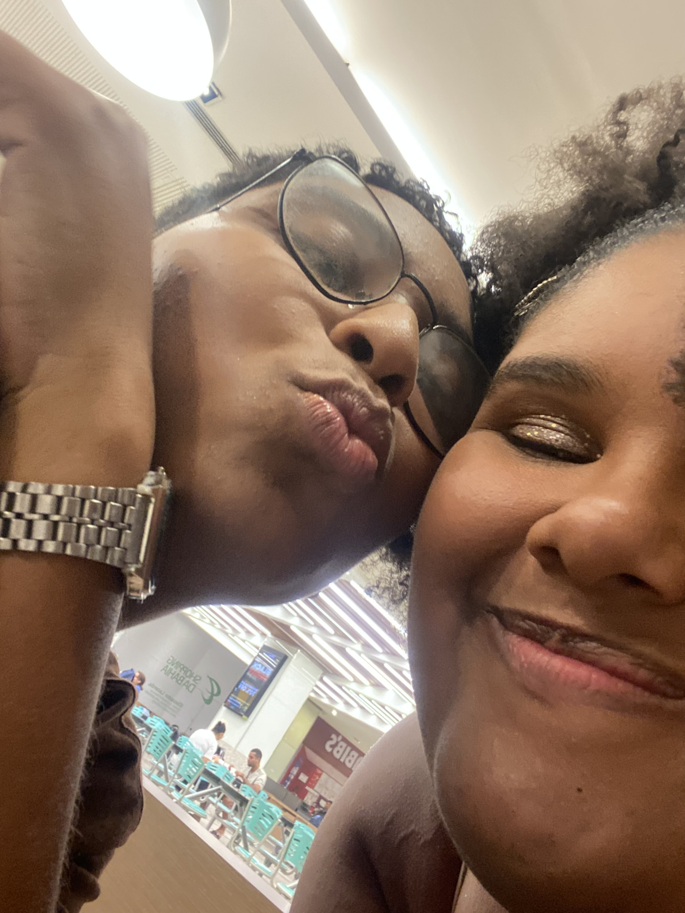

Nossa linha do tempo
Alguns dos momentos que fizeram nossa história.
1º Ano
Onde tudo começou ❤️
Desde o primeiro momento, cada instante ao seu lado se tornou especial, eu jamais iria imaginar que uma simples ida ao cinema com um intuito nada romântico marcaria o inicio de uma história cheia de amor.

2º Ano

Mais momentos, mais histórias ❤️
Durante esse tempo eu já sabia que você era a mulher da minha vida, você faz tudo ser leve, se eu puder ter outra vida com certeza eu estaria te amando também. Você é incrível minha princesa!!!!